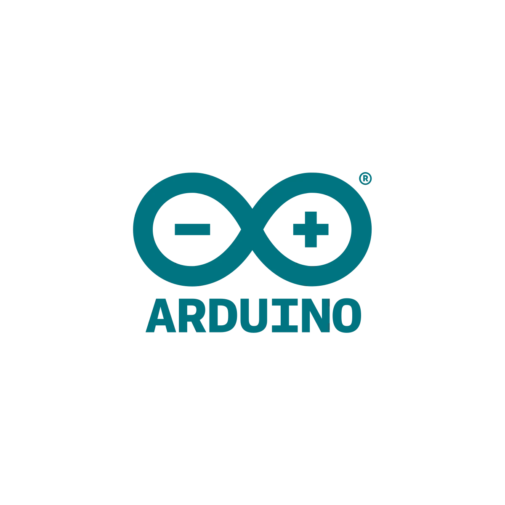

Arduino IDE
In der heutigen Informatik und Elektronik spielt praktisches Arbeiten eine immer grössere Rolle. Ein gutes Beispiel dafür ist die Arbeit mit Arduino-Boards und der dazugehörigen Arduino IDE. Die Arduino IDE ist eine Software, mit der Programme für Arduino-Mikrocontroller geschrieben und auf die Hardware übertragen werden können. Besonders im Unterricht und in Projekten eignet sich die Arduino IDE sehr gut, da man schnell eigene Ideen umsetzen und direkt ausprobieren kann. Während der Arbeit mit Arduino und Raspberry Pi zeigt sich, wie wichtig eine einfache und übersichtliche Entwicklungsumgebung ist. Genau hier setzt die Arduino IDE an.
Was ist die Arduino IDE überhaupt?
Die Arduino IDE wurde im Jahr 2005 entwickelt. Sie entstand in Italien am Interaction Design Institute Ivrea. Zu den bekanntesten Entwicklern gehören Massimo Banzi und David Cuartielles. Das Ziel war es, Studierenden und Lernenden eine einfache Möglichkeit zu geben, mit Mikrocontrollern zu arbeiten. Vor Arduino war das Programmieren von Mikrocontrollern oft kompliziert und teuer. Die Arduino IDE sollte dies vereinfachen und den Einstieg erleichtern. Deshalb ist die Software übersichtlich aufgebaut und einfach zu bedienen. Ein weiterer wichtiger Punkt ist, dass die Arduino IDE Open Source ist. Das bedeutet, dass der Programmcode frei zugänglich ist. Viele Entwickler auf der ganzen Welt tragen dazu bei, die IDE zu verbessern. Dadurch gibt es heute sehr viele Bibliotheken und Beispiele, die besonders beim selbständigen Arbeiten hilfreich sind. Der Hauptzweck der Arduino IDE ist es, Programmierung und Elektronik verständlich und praxisnah zu vermitteln.
Wie funktioniert die Arduino IDE?
Mit der Arduino IDE werden sogenannte Sketches geschrieben. Diese Programme steuern das Arduino-Board und die angeschlossenen Bauteile wie Sensoren, LEDs oder Motoren. Die Programmiersprache basiert auf C/C++, wurde aber vereinfacht, damit auch Anfänger sie schnell lernen können. Die Oberfläche der Arduino IDE besteht aus einem Editor für den Code, Buttons zum Überprüfen und Hochladen sowie einem Bereich für Fehlermeldungen. Besonders praktisch sind die vielen Bibliotheken, mit denen man schnell Funktionen für Temperatur-, Bewegungs- oder Lautstärke Sensoren einbinden kann. Nachdem das Programm geschrieben wurde, überprüft die IDE den Code auf Fehler. Danach wird das Programm über ein USB-Kabel auf das Arduino-Board übertragen. Das Board führt den Code anschliessend selbständig aus. So können Projekte wie eine Raumüberwachung oder andere Messsysteme Schritt für Schritt umgesetzt werden.
Fazit
Die Arduino IDE ist eine sehr benutzerfreundliche Entwicklungsumgebung, die sich ideal für Unterricht, Projekte und selbständiges Lernen eignet. Sie verbindet Theorie und Praxis auf einfache Weise und ermöglicht es, eigene Ideen umzusetzen. Durch ihre einfache Bedienung, die grosse Community und die gute Zusammenarbeit mit Hardware wie Arduino und Raspberry Pi ist sie ein wichtiges Werkzeug in der modernen Informatikausbildung.